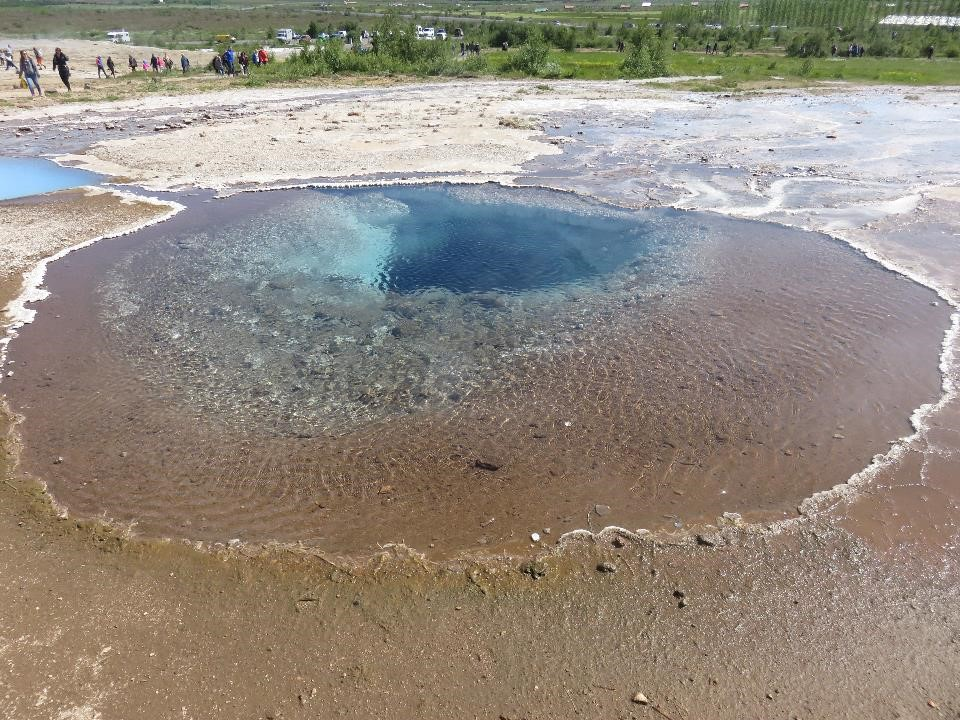

Welcome to Alex's Atlas! Over the last several years, I have been
fortunate to visit a few countries around the world, including France,
Iceland, Ireland, and Japan. Based on my experiences, I would like to
share some of the travel advice and recommendations that may come in
handy if you wanted to plan a trip to any of these countries. This includes
some of my top recommended activities for each country.

Disclaimer: There are still a number of global travel
restrictions due to the COVID-19 pandemic. The advice and recommendations
provided are based on pre-pandemic plans, so be sure to confirm any travel
restrictions based on the current environment before leaving for your trip.
I am always looking for recommendations on new places to travel. Listed
below are the countries I have already visited and those I am considering
for future trips. If you have any recommendations for activities in the
countries listed under "Future Trips" below, I would love to hear from you.
Please contact me!
There are a few travel considerations you should keep in mind regardless
of which country you are visiting.
Translation Apps: There are many great translation apps
out there. One of my favorites is Google Translate. The app provides
the option to translate spoken language for use during conversations
with others, type in the text you need to translate, and point your
camera at text that you need to translate.
International Phone Plans: You can easily rack up
expensive talk, text, and data charges with your phone provider if you
don't plan ahead. Prior to your international travel, be sure to check
with your phone provider to determine the plan that best fits your
needs.
Downloadable Maps: In an unfamiliar location, it
can be helpful to store map downloads on your phone for offline use in
case you lose your signal. In Google Maps, while connected to the
internet, you can search for a location (e.g., Columbus, Ohio), select
the location name at the bottom of the app, hit the "..." button for
more options, and finally select "download offline map." The portion
of the map that you select for offline use will now be available to you
even if you lose your signal.
Currency Exchange: Some credit and debit cards
don't charge a foreign transaction fee. If your card doesn't fall into
this category, you may consider exchanging currency through your
personal bank in advance of your trip to avoid unfavorable fees while
abroad.
Flexible Itinerary: If possible, I recommend
building some flexibility into your itinerary. Doing so may come in
handy, for example, if one of your must-do activities is impacted by
the weather or other unexpected circumstances.
Travel Restrictions: It's important to check the
US Department of State's
Travel Advisories to determine whether there are any travel
restrictions associated with the COVID-19 pandemic or any other
country-specific considerations that may impact your travel.
I would love to hear from you! If you have any travel questions,
comments, or recommendations, or any suggestions on ways I can improve
my site, please contact me.